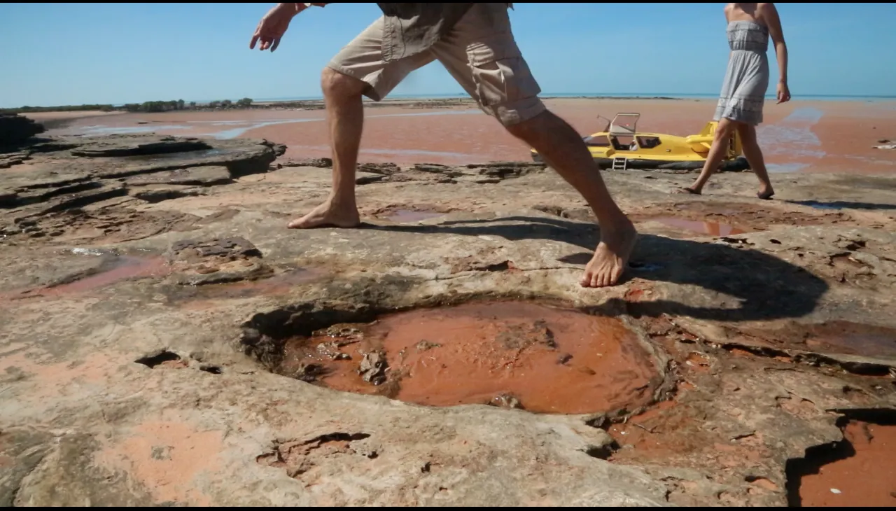

Here there are, the dinosaur footprints! We come alongside a sandstone coast, where nature conserved the largest known dinosaur footprints, which by default made them the largest tracks made by any animals in the history of the earth!
The hypothesis for these features is that they were formed by compression of soft sandy layers by the feet of multi-ton dinosaurs, such as sauropods, that through their great weight deformed sediment well below where their feet actually touched the original surface.
